Все автоматические системы пожаротушения включают в себя средства:
• обнаружения пожара (механические устройства – термоэлементы, электрические
устройства – тепловые, газовые, оптико-электронные и другие извещатели);
• включения системы;
• доставки огнетушащих веществ (воды, пены, порошков, аэрозолей, газов) при
помощи трубопровода и сопел (оросителей, насадков).
Автоматические системы водяного пожаротушения можно разделить на два основных вида:
Спринклерные АСПТ предназначены для обнаружения и локального тушения пожаров и загораний, охлаждения строительных конструкций и подачи сигнала о пожаре.
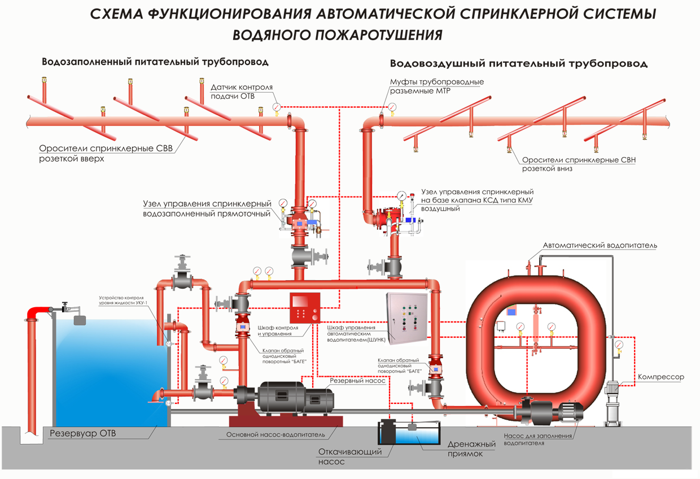
Рисунок 1 – Схема функционирования автоматической спринклерной системы водяного пожаротушения
Механизм спринклерной АСПТ устроен следующим образом: после разгерметизации оросителя давление в трубопроводе падает, открывая клапан в узле управления, и вода устремляется к детектору, фиксирующему срабатывание и подающему командный сигнал на включение насоса. Спринклерные АСПТ предназначены для локального обнаружения и тушения очагов возгорания с включением противопожарной сигнализации, систем оповещения о пожаре, противодымной защиты, управления эвакуацией и выдачей информации о месте пожара. При проектировании сети трубопроводов их делят на секции, каждая из которых может обслуживать одно или несколько помещений и быть снабжена отдельным узлом управления. Давление в трубопроводе нагнетается и поддерживается автоматическим насосом (водопитателем), чтобы АСПТ всегда находилась в состоянии готовности.
Дренчерные АСПТ служат для обнаружения и тушения пожаров по всей защищаемой площади, а также для создания водяных завес.
Дренчерные завесы, от спринклерных АСПТ отличает отсутствие в оросителях (дренчерах) тепловых замков и, следовательно, срабатывание систем от внешних детекторов пожара – пожарных извещателей, других датчиков, тросов с тепловыми замками и т.д., больший расход воды, возможность одновременного срабатывания всех оросителей.
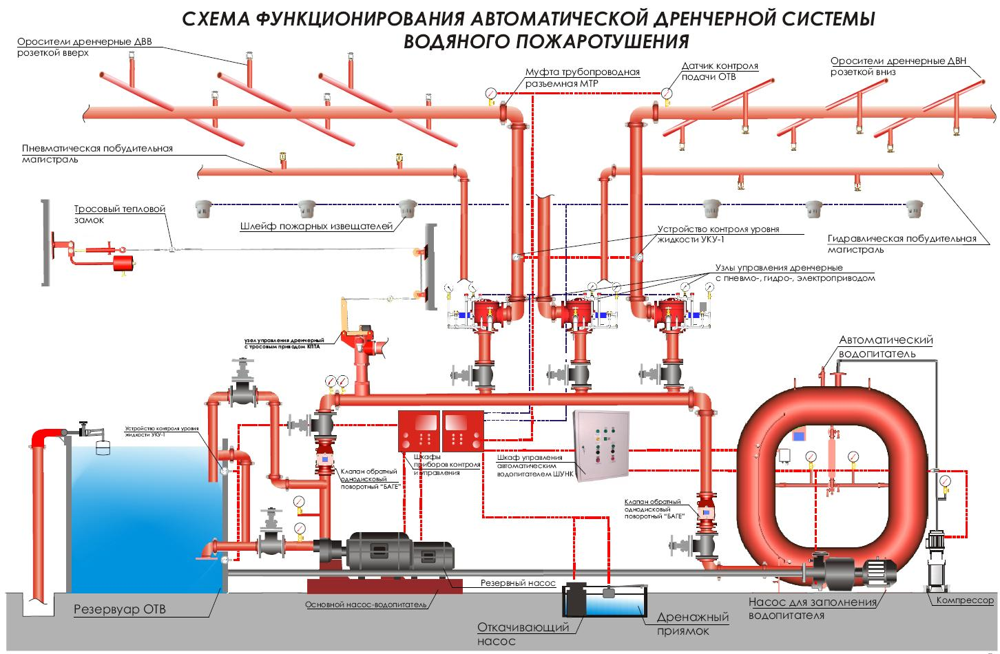
Рисунок 2 – Схема функционирования автоматической дренчерной системы водяного пожаротушения
При нормальной обстановке сухотрубная система заполняется водой только до узла управления, в состав которого входит групповой клапан (выше на схеме трубы с водой показаны синим цветом). После возникновения очага возгорания и повышения температуры срабатывает тепловой пожарный извещатель, передавая сигнал тревоги на шкаф управления. Оттуда в автоматическом режиме поступает команда на гидравлический или пневматический привод, открывающий клапан на магистральном трубопроводе. Дренчерные системы пожаротушения также могут включаться и от тросового привода. В нем трос, расположенный в помещении, закреплен зажимами с плавкими вставками, что разрушаются при нагреве. При проектировании дренчерных АСПТ учитывают: тип дренчера, его напор, количество и расстояние между оросителями, диаметр трубопровода, высоту установки дренчеров, мощность насосов, объем резервуаров с водой. Чаще всего дренчерные АСПТ проектируют совместно со спринклерными.
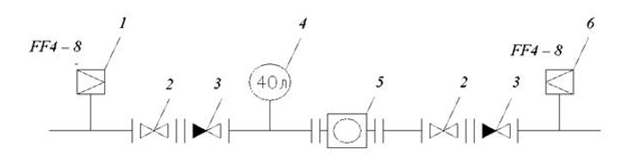
Рисунок 3 – Схема автоматического водопитателя с насосом подкачки, где 1 – реле давления; 2 – механическая задвижка; 3 – обратный клапан; 4 – буферная емкость; 5 – насос-жокей; 6 – реле сухого хода
Вместо больших по емкости автоматических водопитателей в настоящее время применяют насосы подкачки (насос-жокей). На рисунке 3 изображена одна из схем подключения насоса подкачки в установку пожаротушения. Насос-жокей поддерживает с сети трубопроводов заданный напор. Реле давления 1 включается при падении давления, и насос подкачки поднимает напор до требуемого уровня. Задвижки 2 необходимы для производства ремонтных работ на насосе. Обратные клапаны 3 не дают протока воды из распределительных трубопроводов установки, буферная емкость 4 необходима для сглаживания небольших толчков давления в сети. Реле сухого хода 6 не включает насос при отсутствии воды в системе.
Система автоматического аварийно-пожарного речевого оповещения и управления эвакуацией
Автоматическая система оповещения представляет собой комплекс из совместно функционирующих модулей и устройств, предназначенный для предупреждения находящихся в здании людей о пожаре или другой аварийной ситуации и управления эвакуацией. Кроме этого, в отсутствии тревожных событий, оборудование специализированных систем оповещения может использоваться для передачи фоновой музыки или речевых сообщений.
К исполнительным устройствам относятся лампы наружного освещения, прожекторы, сирены, автодозвонщики, блоки электро-магнитных реле, электрозамки и т. п.
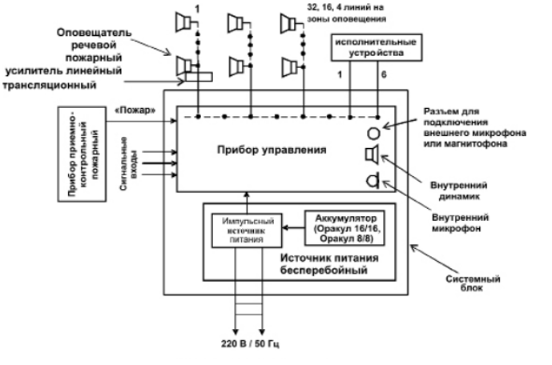
Рисунок 4 – Схема системы оповещения и озвучивания
Централизованные системы оповещения о пожаре имеют центральный блок управления и могут работать как в автоматическом, так и в полуавтоматическом режиме. В автоматическом режиме система оповещения о пожаре, в случае поступления сигнала тревоги, транслирует по зонам записанное экстренное сообщение. При необходимости диспетчер может сам передавать экстренные сообщения с микрофонной консоли или с микрофона блока тревожного оповещения (полуавтоматический режим трансляции).
Пример упрощенной структурной схемы системы оповещения показан на рисунке 5. Использованы 4 выхода управления и 3 выхода речевого сигнала. В первой зоне на одном из выходов установлены световые указатели и речевые оповещетели, на втором выходе – только речевые оповещатели. Установка на выход только речевых оповещателей позволяет осуществлять трансляцию в эти помещения звуковых программ и микрофонных сообщений в дежурном режиме, поскольку при этом не будут включаться указатели путей эвакуации и другие исполнительные устройства.
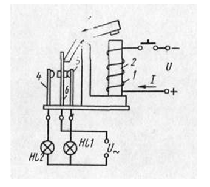
Рисунок 5 – Простейшая схема системы сигнализации на реле
Реле состоит из обмотки 1, размещенной на неподвижном сердечнике 2, подвижного якоря 3 и контактов 4, 5, 6. Сердечник с обмоткой и якорем представ ляет собой электромагнит. Когда под действием напряжения U по обмотке 1 проходит ток 1, якорь 3 притягивается к сердечнику 2 и перемещает подвижный контакт 6 влево. При этом контакты 5 и 6 размыкаются, а контакты 6 и 4 замыкаются. Контакт 6 размещен на плоской пружине. Когда ток в обмотке 1 прекратится, сила притяжения якоря 3 к сердечнику 2 будет равна нулю и усилие сжатой пружины контакта 6 заставит якорь вернуться в прежнее положение. При этом снова замкнутся контакты 5, 6 и разомкнутся контакты 6 и 4. Таким образом, основными частями реле являются электро-магнит, контактный узел и противодействующая пружина.
В видеонаблюдении используется электроприводной механизм управления поворотными камерами. На рисунке 6 представлена структурная схема механизма электропривода
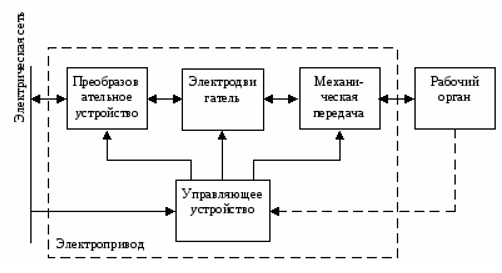
Рисунок 6 – Структурная схема механизма электропривода
Преобразовательное устройство предназначено для преобразования рода тока, напряжения и частоты тока питающей сети и передачи преобразованных параметров в электрическую часть электропривода. Поэтому оно включается между питающей сетью и электрической частью электропривода.
Управляющее устройство предназначено для управления преобразовательным электродвигательным и передаточным устройствами. При помощи управляющего устройства задают необходимый режим работы всего электропривода, например, пуск, остановку, реверс, изменение скорости и др.
Типовыми исполнительными устройствами СКУД являются замки, турникеты, защелки. Рассмотрим основные типовые схемы.
На рисунке 7 представлена функциональная схема кодового замка.
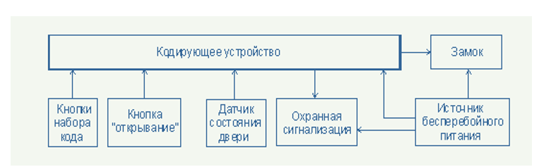
Рисунок 7 – Функциональная схема кодового замка.
Принцип работы кодирующего устройства основан на логическом анализе программой контроллера кодирующего устройства информации о состоянии кнопок кода и кнопки ручного открывания, а также датчика состояния двери с последующей выдачей на внешние цепи управляющих сигналов, соответствующих логике работы.
При наборе кода программа сравнивает набранный код с кодом, находящимся в постоянной памяти. При совпадении кодов устройство замыкает контакты собственного реле, коммутируя управляющее замком напряжение, которое, в свою очередь, открывает замок двери или другого преграждающего устройства, совместимого с логикой работы кодирующего устройства.
При подключенном датчике состояния двери, кодирующее устройство осуществляет контроль открытия двери без подачи управляющего сигнала (контроль несанкционированного доступа), что происходит, например, при взломе двери. При этом выдается сигнал тревоги для охранной сигнализации. Сигнал тревоги выдается также в случае, когда дверь после подачи управляющего сигнала разблокирования замка остается открытой на время более 20 секунд.
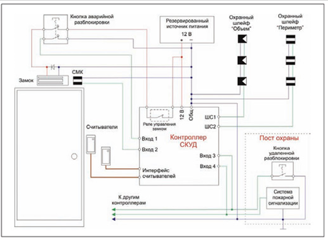
Рисунок 8 – Типовая схема управления дверью
Считыватели соединены с контроллером по стандартной схеме (обычно интерфейс Wiegand). Электромагнитный замок подключен к нормально замкнутым контактам реле, и в режиме ожидания на замок подано напряжение – он удерживает дверь. Параллельно замку устанавливается защитный диод, который шунтирует импульс напряжения, возникающий на обмотке при отключении питания. Датчик положения двери подключен к специальному сигнальному входу.Для надежного закрывания дверь оснащена механическим доводчиком. Кнопка аварийной разблокировки служит для открывания двери в экстренных случаях. Эта кнопка одновременно разрывает цепь питания замка и изменяет состояние одного из входов контроллера, благодаря чему формируется событие "Нажата кнопка разблокировки". Данное событие записывается в протокол. На посту охраны устанавливается кнопка групповой разблокировки с аналогичными функциями. Кроме того, разблокировка дверей при пожаре выполняется автоматически при поступлении сигнала от системы пожарной сигнализации.
Помимо функций СКУД, контроллер выполняет охрану помещения. Шлейфы с извещателями подключаются к его охранным входам. Постановка на охрану производится с помощью карт доступа либо автоматически – при выходе последнего сотрудника из помещения.
Схема управления турникета представлена на рисунке 9.
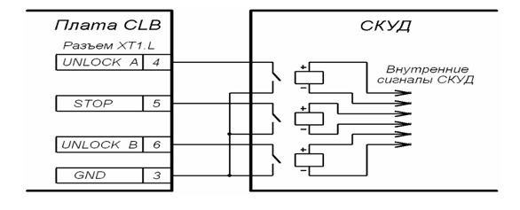
Рисунок 9 – Схема работы турникета
Управление турникетом осуществляется подачей на контакты клеммной колодки “XT1.L” Unlock A, Stop и Unlock B сигнала низкого уровня относительно контакта GND, при этом управляющим элементом могут быть нормально разомкнутый контакт реле или схема с открытым коллекторным выходом. Аварийная разблокировка турникета осуществляется снятием с контакта Fire Alarm сигнала низкого уровня относительно контакта GND, при этом управляющим элементом может быть нормально замкнутый контакт реле или схема с открытым коллекторным выходом.
Структурная схема подключения автоматического шлагбаума на рисунке 10.
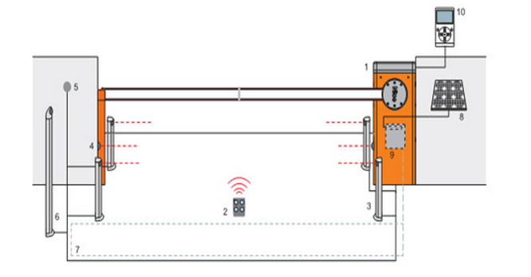
Рисунок 10 – Структурная схема подключения автоматического шлагбаума, где 1 - шлагбаум M-Bar; 2 - брелок-пульт радиоуправления; 3 - фотоэлементы на стойке; 4 - фотоэлементы; 5 - переключатель цифровой; 6 - переключатель на стойке; 7 - индукционная петля; 8 - солнечная панель; 9 - аккумуляторная батарея; 10 - специальное устройство O-View
Блок управления шлагбаума имеет 3 кнопки управления, которые можно использовать как для контроля управления во время тестирования, так и для программирования:
- кнопка «▲ Open» - шлагбаум начинает движение «Открытие»; в режиме программирования - передвижение вверх по шагам программирования;
- кнопка «Stop» останавливает текущее действие; при нажатии и удерживании более 5 секунд блок управления входит в режим программирования;
- кнопка «▼ Close» - движение «Закрытие»; в режиме программирования позволяет передвижение вниз по шагам программирования;
В железнодорожном транспорте можно рассмотреть следующие схемы исполнительных устройств.
Схема управления переездных устройств представлен на рисунке 11.
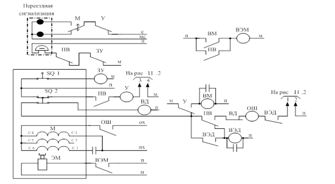
Рисунок 11 – Схема управления переездного устройства
Для управления работой переездных устройств используется реле ПВ. При приближении поезда к переезду реле ПВ обесточивается, подключая питание к звонку переездной установки, и выключает управляющее реле «У». Последнее подает питание на красные огни переездных светофоров через контакты мигающего реле «М», а также отключает питание включающего медленнодействующего реле ВМ.
После необходимой для освобождения переезда от автотранспорта выдержки времени реле ВМ обесточивается и выключает реле ВЭМ. Это реле прекращает подачу питания на электромагнитную защелку ЭМ, вследствие чего шлагбаум опускается.
Схема управления стрелочным переводом представлена на рис. 12.
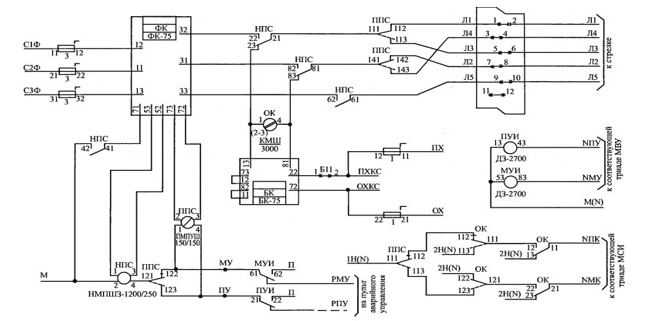
Рисунок 12 – Схема управления стрелочным переводом
Автоматический перевод стрелок осуществляется через контакты управляющих интерфейсных реле ПУИ или МУИ типа ДЗ-2700, которые подключены к модулю МВУ.
Для индивидуального перевода в плюсовое или минусовое положение на пульте аварийного управления расположены стрелочные кнопки, контактами которых выполнено подключение проводами РПУ и РМУ к тыловым контактам реле ПУИ и МУИ с проверкой свободности стрелочной секции. При ложной занятости секции ДСП использует кнопку-счетчик вспомогательного перевода установленным в инструкции ЦШ-530 порядком.
Контроль положения стрелок в режиме работы с УВК организуется через модуль МСИ, а в индивидуальном режиме с аварийного пульта предусмотрены стрелочные контрольные реле, включенные по типовой схеме. Контактами этих реле включаются контрольные лампы на пульте по жилам КП, КМ и КО.
Антиблокировочные системы (АБС) тормозов призваны обеспечить постоянный контроль за силой сцепления колес с дорогой и соответственно регулировать в каждый данный момент тормозное усилие, прилагаемое к каждому колесу. АБС производит перераспределение давления в ветвях гидропривода колесных тормозов так, чтобы не допустить блокирования колес и вместе с тем достичь максимальной силы торможения без потери управляемости автомобиля.
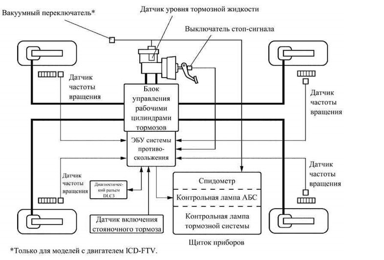
Рисунок 13 – Блок схема управления АБС
Появилось много разнообразных конструкций АБС, которые решают задачу автоматического регулирования тормозного момента. Независимо от конструкции, любая АБС должна включать следующие элементы:
• датчики, функцией которых является выдача информации, в зависимости от принятой системы регулирования, об угловой скорости колеса, давлении рабочего тела в тормозном приводе, замедлении автомобиля и др.
• блок управления, обычно электронный, куда поступает информация от датчиков, который после логической обработки поступившей информации дает команду исполнительным механизмам
• исполнительные механизмы (модуляторы давления), которые в зависимости от поступившей из блока управления команды снижают, повышают или удерживают на постоянном уровне давление в тормозном приводе колес
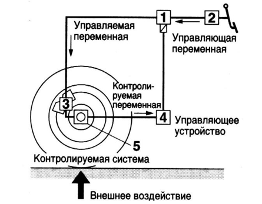
Рисунок 14 – Схема управления АБС, где 1 – исполнительный механизм; 2 – главный тормозной цилиндр; 3 – колесный тормозной цилиндр; 4 – блок управления; 5 – датчик вращения скорости колеса
Процесс регулирования с помощью АБС торможения колеса – циклический. Связано это с инерционностью самого колеса, привода, а также элементов АБС. Качество регулирования оценивается по тому, насколько АБС обеспечивает скольжение тормозящего колеса в заданных пределах. При большом размахе циклических колебаний давления нарушается комфортабельность при торможении «дергание», а элементы автомобиля испытывают дополнительные нагрузки. Качество работы АБС зависит от принятого принципа регулирования, а также от быстродействия системы в целом. Быстродействие определяет циклическую частоту изменения тормозного момента. Важным свойством АБС должна быть способность приспосабливаться к изменению условий торможения (адаптивность) и, в первую очередь, к изменению коэффициента сцепления в процессе торможения.
Разработано большое число принципов (алгоритмов функционирования), по которым работают АБС. Они различаются по сложности, стоимости реализации и по степени удовлетворения поставленным требованиям. Среди них наиболее широкое применение получил алгоритм функционирования по замедлению тормозящего колеса.
Тормозная динамика автомобиля с АБС зависит от принятой схемы установки элементов этой системы. С точки зрения тормозной эффективности, наилучшей является схема с автономным регулированием каждого колеса. Для этого необходимо установить на каждое колесо датчик, а в тормозном приводе – модулятор давления и блок управления. Эта схема наиболее сложная и дорогостоящая.
Существуют более простые схемы АБС. На рисунке б показана схема АБС с регулируемым торможением двух задних колес. Для этого используются два колесных датчика угловых скоростей и один блок управления. В такой схеме применяют так называемое низко- или высокопороговое регулирование Низкопороговое регулирование предусматривает управление тормозящим колесом, находящимся в худших по сцеплению условиях («слабым» колесом). В этом случае тормозные возможности «сильного» колеса недоиспользуются, но создается равенство тормозных сил, что способствует сохранению курсовой устойчивости при торможении при некотором снижении тормозной эффективности. Высокопороговое регулирование, т. е. управление колесом, находящимся в лучших по сцеплению условиях, дает более высокую тормозную эффективность, хотя устойчивость при этом несколько снижается. «Слабое» колесо при этом способе регулирования циклически блокируется.
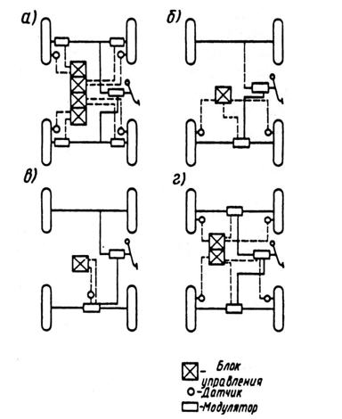
Рисунок 15 – Схемы установки АБС на автомобиле
Еще более простая схема приведена на рисунке «в». Здесь используются один датчик угловой скорости, размещенный на карданном валу, один модулятор давления и один блок управления. По сравнению с предыдущей эта схема имеет меньшую чувствительность.
На рисунке «г» приведена схема, в которой применены датчики угловых скоростей на каждом колесе, два модулятора, два блока управления. В такой схеме может применяться как низко-, так и высокопороговое регулирование. Процесс работы АБС может проходить по двух- или трехфазовому циклу.
При двухфазовом цикле:
• первая фаза – нарастание давления
• вторая фаза – сброс давления
При трехфазовом цикле:
• первая фаза – нарастание давления
• вторая фаза – сброс давления
• третья фаза – поддержание давления на постоянном уровне
При установке на легковом автомобиле АБС возможны замкнутый и разомкнутый тормозные гидроприводы.
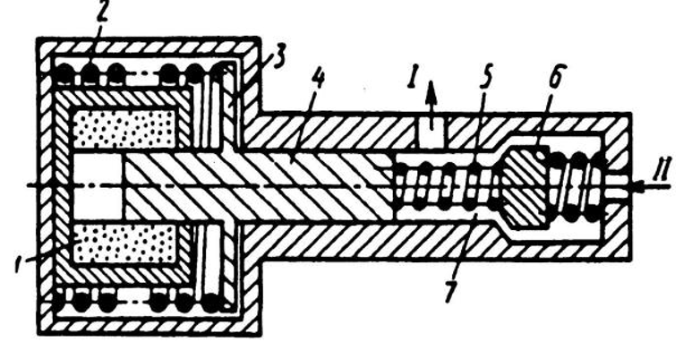
Рисунок 16 – Схема модулятора давления гидростатического тормозного привода
Замкнутый или закрытый (гидростатический) привод работает по принципу изменения объема тормозной системы в процессе торможения. Такой привод отличается от обычного установкой модулятора давления с дополнительной камерой. Модулятор работает по двухфазовому циклу:
• Первая фаза – нарастание давления обмотка электромагнита 1 отключена от источника тока. Якорь 3 с плунжером 4 находится под действием пружины 2 в крайнем правом положении. Клапан 6 пружиной 5 отжат от своего гнезда. При нажатии на тормозную педаль давление жидкости, создаваемое в главном цилиндре (вывод II), передается через вывод I к рабочим тормозным цилиндрам. Тормозной момент растет.
• Вторая фаза – сброс давления: блок управления подключает обмотку электромагнита 1 к источнику питания Якорь 3 с плунжером 4 перемещается влево, увеличивая при этом объем камеры 7. Одновременно клапан 6 также перемещается влево, перекрывая вывод I к рабочим тормозным цилиндрам колес. Из-за увеличения объема камеры 7 давление в рабочих цилиндрах падает, а тормозной момент снижается. Далее блок управления дает команду на нарастание давления, и цикл повторяется.
Разомкнутый или открытый тормозной гидропривод (привод высокого давления) имеет внешний источник энергии в виде гидронасоса высокого давления, обычно в сочетании с гидроаккумулятором.
В настоящее время отдается предпочтение гидроприводу высокого давления, более сложному по сравнению с гидростатическим, но обладающим необходимым быстродействием.
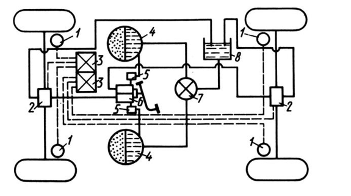
Рисунок 17 – Двухконтурный тормозной привод с АБС: 1 – колесный датчик угловой скорости; 2 – модуляторы; 3 – блоки управления; 4 – гидроаккумуляторы; 5 – обратные клапаны; 6 – клапан управления; 7 – гидронасос высокого давления; 8 – сливной бачок.
Тормозной привод имеет два контура, поэтому необходима установка двух автономных гидроаккумуляторов. Давление в гидроаккумуляторах поддерживается на уровне 14…15 МПа. Здесь применен двухсекционный клапан управления, обеспечивающий следящее действие, т. е. пропорциональность между усилием на тормозной педали и давлением в тормозной системе. При нажатии на тормозную педаль давление от гидроаккумуляторов передается к модуляторам 2, которые автоматически управляются электронными блоками 3, получающими информацию от колесных датчиков 1.
Проанализировав типовые схемы исполнительных устройств ЭСБ можно сказать, что большинство схем построено на реле. Схем достаточно большое разнообразие, что позволяет проектировать различные модификации систем ЭСБ.